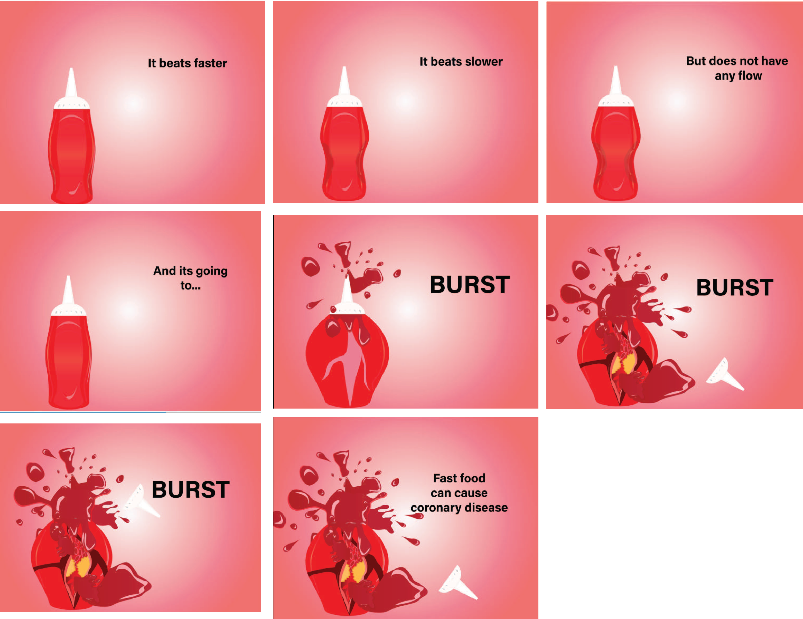

Empowering Change, Sparking Awareness.
SENSITIZATION CAMPAIGN
BRIEF
The island, rich in seafood and natural beauty, faces severe health challenges. Alarming figures show high
diabetes rates (22.8% in 2015)and over 350,000
people struggling with obesity. Increased alcohol consumption
worsens health issues, including rising depression rates. With a population of 1.3 million, over 300,000 face
serious health risks, mainly related to cardiovascular diseases, the leading cause of death. This concerning trend,
highlighted in a 2017
“Le Mauricien” article, questions government health priorities. The World Health Organization
notes around 33% affected by cardiovascular disease, a
burden set to increase due to our aging population.
THE RATIONALE BEHIND INITIATING THE PROJECT WAS AS FOLLOWS:
- To disseminate information regarding the causes of coronary heart disease.
- To promote and motivate individuals to engage in physical exercise.
- To raise awareness about coronary heart disease within the community.
E-CATALOGUE
The e-catalog, consisting of six pages, aims to teach about coronary heart disease's impact and how exercise can help prevent it.
It's designed to raise awareness and encourage exercise for better heart health.
BILLBOARD
The illustration portrays potatoes immersed in blood, symbolizing dietary choices.
The frozen blood signifies the consequences of physical inactivity.
Elevated fats in potatoes can induce blood coagulation,
potentially leading to blockages. Prolonged consumption of such foods may contribute to
the development of coronary disease
and other grave health conditions.
BANNER
The banner illustrates fast food's prevalence among youngsters, known for its adverse impact on heart health.Using this imagery aims to attract attention
more effectively than health-focused visuals. Although the image portrays a tempting meal, the message emphasizes its negative health effects. Regular consumption without adequate activity can lead to obesity and contribute to coronary disease..
NEWSPAPER
The image depicts blood-covered potatoes, symbolizing food intake, while the frozen blood signifies a lack of physical activity.
High fats in potatoes
may cause blood clotting, leading to blockages. Consistent consumption of such food over time could contribute
to coronary disease and other severe health conditions.
RADIO AD
The radio ads are designed to communicate that with age, heart rate naturally declines. Additionally, a sedentary lifestyle can foster irregular heartbeats and blood thickening. This denser blood consistency can significantly disrupt circulation through smaller vessels and arteries, ultimately culminating in the development of coronary disease.
30 SECS ANIMATION
Using keyframes, the animated sequence illustrates the concept of coronary disease. Symbolically, a tomato sauce bottle emulates the heart's rhythmic motions, its pulse echoed in sound. However, prolonged inactivity leads to congealed blockage at the tube's tip, resulting in forceful bursts resembling lumps—a visual metaphor for extended inactivity. Creating illustrations in Adobe Illustrator and bringing them to life with animation and final rendering using Adobe After Effects.
Discover the steps involved in 3D animation here!
Join the Movement: Sensitizing for a Healthier Tomorrow!
Step into the world of awareness! Dive into our sensitization campaign to discover how
little steps lead to big impacts on health. Explore, engage, and amplify the joy of
well-being!
Quoted:"Health is the ultimate wealth! Let's cherish it, share it, and make it contagious"
Phone
(230) 5931-3519Address
Cite SouchonEngrais Martial
Curepipe Mauritius